PTFI Copper Chip Milling System
Engineered the full tender documentation package: method statements, technical specifications, equipment BOQ, floor plan layouts, project schedule and K3/HSE plan, securing contract award at PT Freeport Indonesia. Led the client technical presentation and coordinated multi-vendor procurement against a Gantt-based master schedule. Also authored the Work Method Statement for the Copper Chip Workshop electrical installation: cable tray, SDP 1 to SDP 4 panels, wiring and devices.
Project Overview
Background / Problem Statement
PT Freeport Indonesia opened a tender for a copper chip milling system, requiring a technically sound, K3/HSE-compliant proposal covering equipment selection, floor plan layout, and project execution methodology. PT Aldzama needed a complete, defensible tender package to compete for and win the award.
Project Objectives
Secure the contract award by producing complete, standards-compliant tender documentation, present a credible commissioning and safety methodology to the client, and set up a procurement and schedule structure that keeps delivery on the critical path.
Main Idea / System Concept
A single, coherent tender package — method statements, technical specifications, equipment BOQ, floor plan layouts, project schedule, and K3/HSE plan — built around PTFI's safety management system standards, then defended directly to the client in a formal technical presentation.
Application / Use Case
Copper chip milling system installation and operation at a PT Freeport Indonesia production site, from tendering through equipment procurement and commissioning.
Technical Details
The engineering package moves from client requirements to an awarded, executable contract: scope and specifications are translated into a floor plan and equipment list, priced and scheduled, then defended to the client before procurement begins.
Deliverables
- Item Method statements & technical specifications
- Item Equipment BOQ & floor plan layouts
- Item Project schedule (Gantt) & K3/HSE plan
K3/HSE Documentation
- Item JSA & HIRADC
- Item Permit-to-Work procedures
- Item Emergency Response Plan
Tools Used
Workflow Explanation
Scope & requirement review
Reviewed PTFI's tender scope and technical requirements to define the equipment, layout, and safety framework needed for the milling system.
Tender documentation
Authored the method statements, technical specifications, equipment BOQ, floor plan layouts, project schedule, and K3/HSE plan to full PTFI safety management system standards.
Client technical presentation
Presented project scope, commissioning methodology, K3 compliance framework, and equipment selection rationale directly to the client, securing the contract award.
Procurement & scheduling
Coordinated multi-vendor equipment procurement against a Gantt-based master schedule, aligning delivery timelines with the critical path to prevent slippage.
Client Requirement & Raw Material
PTFI supplies off-grade copper cathode — material that does not pass LME Grade A standards — for conversion into copper chips used as internal feedstock for the Cu₂Te reactor at the Manyar Smelter, Electro Refinery Area, Gresik.

Raw Material Specification
- Material Off-grade copper cathode sheet (ER & EW routes)
- Dimensions 1 m × 1 m, thickness approx. 5–7 mm
- Weight 55–60 kg per sheet
- Source Manyar Smelter — Electro Refinery Area, Gresik
Final Chip Dimensional Spec
- Length Max. 15 mm (trial actual: 7 mm)
- Width Max. 5 mm (trial actual: 1 mm)
- Thickness Max. 1 mm (trial actual: 1 mm)
- KPI ≥95% dimensional spec compliance | ≥90% chip geometry compliance
Production Target
- Yearly 90 ton
- Monthly (KPI) Approx. 10 ton, min. 7,500 kg
- Daily Approx. 340.1 kg
- Hourly Approx. 56 kg
Machine & Equipment Specification
Two Sigma X6132 horizontal milling machines — one per shift — form the core of the proposed solution, sized so cutting load, spindle speed and dimensional control all sit comfortably inside the machine's rated capability.

Sigma X6132 Milling Machine
- Motor 7.5 kW — actual cutting load only ~0.047 kW (≈0.6% load) on soft copper cathode
- Spindle 30–1,500 RPM — operating at 955 RPM (≈64% of max), no modification needed
- Cutter Ø31 mm HSS M42 Cobalt 8% TiCN-coated, 2-flute end mill, ISO50 holder
- Feed Automatic feed, 458 mm/min, for consistent & uniform chip output
- Maintenance Preventive service every 500 hours, scheduled on the idle shift — zero planned production downtime
Major Equipment Deployed
- Machines 2× Sigma X6132 milling machine, 1 per shift
- Vacuum 1× VALTER pneumatic industrial vacuum, explosion-proof
- Tooling 2× ISO50 end mill holder Ø32 mm
- Foundation 2× concrete footing, 3 m × 2.2 m × 0.6 m per machine
- Electrical 200 m NYY 4×6 mm² cable + 4× panel/switchgear to PTFI's 3-phase supply
Consumables & Spare Parts (24-Month Scope)
- Cutting tools 400 units HSS M42 Co 8% TiCN Ø31 mm end mill
- Lubricants Vactra No.2 way lube, Mobilux EP2 grease, ISO 32 pneumatic oil
- Coolant Soluble oil coolant (water-miscible emulsion)
- Packaging 3,500 PP woven jumbo bags
- Spares Bronze lead screw nuts, friction plates, motor coil & brush cores, table slider, hardware spares
Dimensional Control — Three Independent Mechanisms
Machining Process Flow
Four sheets are stacked, clamped and side-milled edge to edge in a single simultaneous pass, then chips are collected, weighed and packed for transfer to PTFI's Cu₂Te reactor feed area.
Loading & inspection
Copper cathode sheets delivered by PTFI's forklift, checked for nodules or imperfections; nodules are chipped off with a pneumatic air breaker before use.
Stacking & clamping
4 sheets stacked to a 28 mm total height and secured firmly with C-clamps on the milling table — proper clamping prevents dimensional deviation and tool damage.
Cutter positioning & feed pass
Ø31 mm end mill positioned at the stack edge, radial depth engagement set and locked by the depth stop; automatic feed at 458 mm/min drives the stack through the rotating cutter at 955 RPM, all 4 plates cut simultaneously.
Progressive passes & batch changeover
Depth advances 1–4 mm per pass across the full 1 m plate width (~1,000 passes/batch, serviced simultaneously across all 4 plates); full batch changeover takes about 15–17 minutes.
Collection, bagging & vacuum recovery
Chips swept from table and chute into pre-weighed PP jumbo bags as a real-time production checkpoint; residual chips and fine dust in crevices and floor joints are cleared with the VALTER HEPA vacuum unit.
Production Throughput
- Batch cycle ≈60 min (incl. 15–17 min changeover) yielding ≈215 kg
- Per shift ≈1,500 kg (7 batches over 8 hours)
- System capacity ≈3,000 kg/day across 2 machines on 2 shifts
- KPI buffer System capacity comfortably clears the 340 kg/day, 10-ton/month target
Trial Verification
- Trial result 7 mm (L) × 1 mm (W) × 1 mm (T) — within all 3 dimensional limits
- Method Edge-to-edge side milling — chip length equals plate thickness by cut geometry, not operator adjustment
- Surface area Trial chip geometry gives a higher surface-area-to-mass ratio than PTFI's maximum allowed dimensions, benefiting Cu₂Te reaction efficiency


Aldzama Copper Chipping Plant — General Layout
Five working zones arranged in a one-way flow — material enters from the staging side and finished chips leave from the opposite end, with no crossing traffic in between.

Zone Arrangement
- Staging Raw material staging adjacent to the machine loading side, minimizing forklift travel
- Machine zone 2× X6132 units, ≥1 m clearance on all sides for operation and maintenance
- Forklift lane Physically separated from the machine zone by a flexible polymer tube rail barrier
- Storage Chip storage at the opposite end from raw material intake — one-way flow
- Vacuum Positioned centrally between the two machines to reach both without relocating
Scope Split — Aldzama vs. PTFI
- Aldzama Manpower (2 shifts: 06.00–14.00 / 14.00–22.00), 2 milling machines, 1 vacuum, PPE, consumables, spare parts, reporting & KPI tracking
- PTFI Site access, 3-phase power supply, workshop building, forklift/crane support, raw material supply, safety induction
- Safety Emergency exit paths kept at min. 1.5 m width per PTFI STD-4.09, never used for storage
Safety Aspects (K3/HSE)
HIRADC prepared on PTFI form FRM-2.02-PTFI-001, with controls following the hierarchy of controls: Elimination → Substitution → Engineering Control → Administrative → PPE.

Top Hazards Identified (FRM-2.02-PTFI-001)
- Copper dust Severity 2 / Likelihood 4 — dual HEPA vacuum + P100 respirator, periodic air monitoring
- Machine noise >85 dB(A) Kepmenaker KEP-51/MEN/1999 — NRR-25 earplugs mandatory, periodic audiometric testing
- Rotating cutter Severity 4 — machine guard + LOTO before maintenance, impact gloves, buddy system (no solo operation)
- Electrical short circuit Severity 3 / Likelihood 2 — daily electrical inspection, APAR at workstation
PPE Matrix (PTFI STD-4.01.30)
- Head/Eyes MSA v-Gard® helmet, 3M GG501SGAF anti-fog goggles
- Respiratory 3M 6501/02/03QL half-face respirator, P100 + acid gas cartridge 60927
- Hearing Allsafe reusable corded earplug, NRR 25 dB
- Hands Ansell EDGE 48-126 general glove + Ansell RINGERS® R085 impact glove
- Body/Feet Firegap 100% cotton FR coverall (NFPA 2112-2023); Aetos/KRUSHER safety shoes, 300°C heat resistant
Emergency Response & HSE Communication
- Muster point Open area outside the Process Plant, min. 30 m from hazard zone, per PTFI's established evacuation routes
- ERP scope Fire, chemical spill, machine entrapment, medical, forklift collision — min. 1 drill/year (STD-4.09, STD-3.08)
- Pre-work Work Permit + JSA review + P2H inspection before every shift
- Cadence Daily Toolbox Meeting, weekly PTFI HSE meeting, monthly management walkthrough
- Occupational health MCU initial & annual, micro-break/stretching routine, ergonomic guidance (STD-4.02)
Preparation Schedule & Commercial Structure
Concrete foundation curing and machine delivery set the critical path from contract award to first production; commissioning test cuts verify chip dimensions before the contract start date.
Preparation Timeline
- Critical path Concrete foundation curing (~3–4 weeks) and machine delivery, both initiated on contract-award day
- Parallel track Consumables/spares procurement, personnel certification and PTFI safety induction, electrical infrastructure installation
- Commissioning Test cuts on actual cathode material; dimensions verified before declaring the line production-ready
- Contract term 24 months, S-curve production plan tracked against the ~10-ton monthly KPI
Commercial Structure
- Pricing model Monthly copper chip milling service, priced per kg with a 7,500 kg/month minimum charge
- Pass-through items Annual MCU charge for all personnel
- One-time item Site establishment and mobilization/demobilization of equipment
- Cash flow Structured for stable monthly billing across the full 24-month term, with THR provision and an inflation buffer built into the pricing so the rate holds without renegotiation
Exact commercial figures are part of PT Aldzama's client-facing tender package and are omitted here out of commercial confidentiality — available on request.
Work Method Statement: Copper Chip Workshop
After the tender was won, the next job was building the workshop electrical system. I authored the Work Method Statement (WMS) that tells the site team how to install the cable tray, the four SDP distribution panels, the internal wiring, the cables and the devices for PT Freeport Indonesia at the Manyar Smelter Project. The document is issued for approval (Rev. C).
Scope of Work (PT Aldzama)
- Tray Cable tray with UNP 100 supports, L 50×50 brackets and tray bonding
- Panels SDP 1 to SDP 4 installation, gland plate, labelling and inspection
- Internals DIN rail, MCCB, RCBOs, busbars, N/PE bars, wiring ducts and panel wiring
- Cables External feeder pulling from the MDP, termination at loads
- Devices Receptacles, junction boxes, switches and LED lamps
Not Included
- Testing Testing and energization follow a separate WMS
- MDP Work inside the MDP and the power source before it
- Steel Main steel work, unless PTFI approves it
- Rule PTFI documents come first: if drawings and WMS differ, stop and send an RFI
Two work segments, kept apart on purpose
| Segment | Type of work | Voltage status |
|---|---|---|
| A | Civil / steel / mechanical: setting out, UNP and bracket supports, tray, panel base frame and positioning | No voltage. Work-at-height permit; hot-work permit for welding the supports |
| B | Electrical installation: tray bonding, gland plates, panel assembly and wiring, cable pulling, termination, devices | Not energized. LOTOTO near any live part |
| Common | Document review, work permit and isolation, material receiving, safety controls | Applies to A and B |
Panels, Power Flow and Drawings
The design data is taken from the layout drawings and the four single-line diagrams (SLD). Each SDP has one main MCCB at the incomer and RCBOs protecting each outgoing circuit. SDP 4 feeds the heaviest loads, the milling machines and the jib crane hoist.
| Panel | Location | Size (mm) | Incomer MCCB | Incomer cable | Outgoing circuits |
|---|---|---|---|---|---|
| SDP 1 | Office & Break Room | 500 × 700 × 200 | 3-phase, 4-pole, 16 A, 6 kA | N2XY 25 mm², 2C+E | 5 × RCBO 1P+N, 30 mA: 4 A × 1, 10 A × 4 |
| SDP 2 | Workshop, grid line 2 | 600 × 800 × 200 | 3-phase, 4-pole, 32 A | N2XY 35 mm², 3C+E+N | 6 × RCBO 1P+N, 30 mA: 20 A × 3, 4 A × 3 |
| SDP 3 | Workshop, grid line 2 | 600 × 800 × 200 | 3-phase, 4-pole, 50 A | N2XY 25 mm², 3C+E+N | 5 × RCBO 4P, 300 mA: 20 A × 2, 10 A × 1, 4 A × 2 |
| SDP 4 | Machinery, grid line 2 | 600 × 800 × 200 | 3-phase, 4-pole, 125 A, 25 kA | N2XY 50 mm², 3C+E+N | 4 × RCBO 4P, 300 mA: 32 A × 3, 6 A × 1 |
- Main MCCB
- 16 A
- Loads
- Lighting, 4 receptacles, air conditioner
- Main MCCB
- 32 A
- Loads
- 3 industrial receptacles, 6 highbay lamps
- Main MCCB
- 50 A
- Loads
- 4 × 380 V receptacles, exhaust fans, rolling door, vacuum
- Main MCCB
- 125 A
- Loads
- Milling machines #1 to #3 (#3 spare), jib crane hoist
Redrawn from the WMS power-flow diagram. SDP 4 shows 125 A as used in the WMS; the draft SLD still shows 150 A (query 2 below).
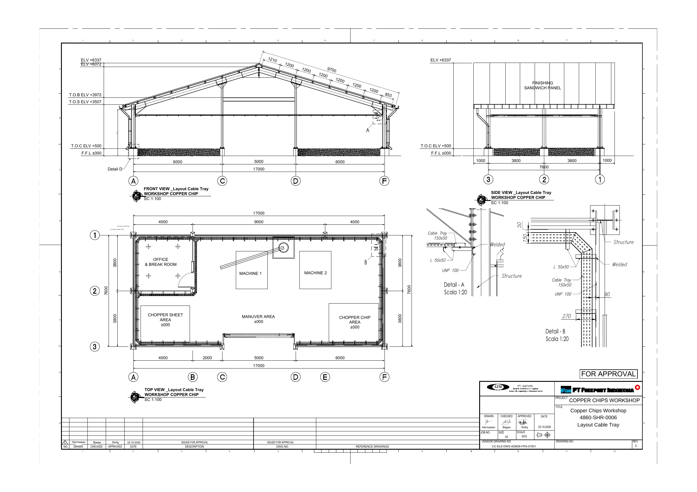
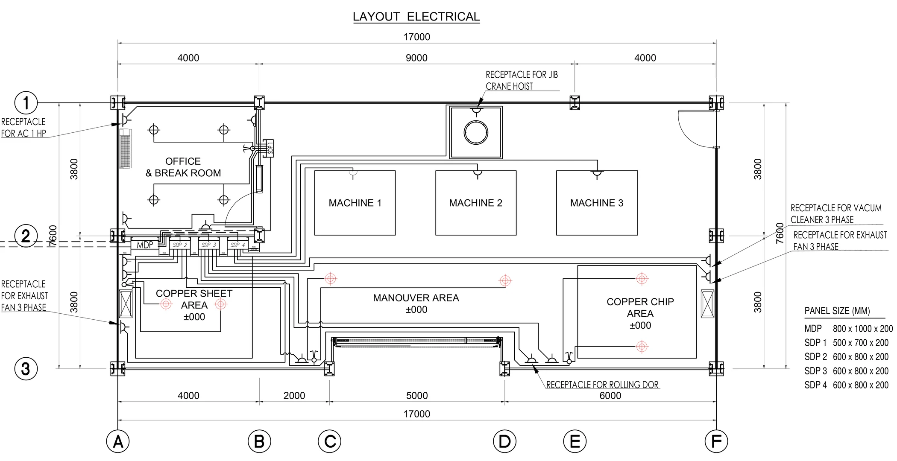
Open items closed with PTFI before the related work starts
| No. | Query found when comparing drawing and WMS | Action |
|---|---|---|
| 1 | Detail D (column base at grid A) is called on the Front View but is not on the sheet | Get the sheet from PTFI if it affects UNP fixing at the columns |
| 2 | SDP 4 incomer: WMS uses a 125 A, 25 kA MCCB; the draft SLD still shows 150 A | Ask PTFI to approve 125 A and revise the SLD before ordering the MCCB |
| 3 | SLD SDP 2 and SDP 3 show no kA rating for the MCCB | RFI to PTFI before the MCCBs are ordered |
| 4 | Vacuum cleaner cable is written 2C+E+N on SLD III, but the load is 380 V 3C+E | HOLD: confirm core count by RFI before cutting the cable |
Why this matters: the draft drawings did not fully agree with each other. Comparing every drawing against the WMS and sending an RFI instead of guessing on site is what the method statement is built around.
17 Steps, Stop at Every Hold Point
The steps must be done in order. At a hold point the team stops and waits for the signed inspection (ITP) before going on. This is the map of the whole job.
- Check drawings and work areaClose the open items with PTFI first.Common
- Permits, induction, TBM, LOTOTOBarricades up before any work.Common
- Set out tray, supports, panels and devicesHold point ITP 1.1.1: PTFI approves the marks.Segment A
- Receive and check all materialHold point ITP 1.2.1 to 1.2.5: MIR approved by PTFI.Common
- UNP 100 supports and L 50×50 bracketsHold points ITP 2.1.1 (marks) and 2.1.2 (supports released).Segment A
- Lift, place, joint and align the trayChamfered corners, supports next to every joint.Segment A
- Tray bonding and inspectionHold point ITP 2.1.4: tray approved before any cable is laid.Segment B
- Panel posts, base frame and positioningUNP posts (BOLT 2), then the panel on the posts (BOLT 1).Segment A
- Cable entry, gland plate, labellingHold point ITP 2.2.2: panel approved.Segment B
- Panel internalsDIN rail, MCCB, RCBOs, busbar, ducts, N and PE bars. Supervisor checks the DIN rail first.Segment B
- Cable pulling and layingOnly after tray and panels are released.Segment B
- Internal wiring and panel-end terminationHold point: inspection before the panel is closed.Segment B
- Cable termination at the loadsCheck cable cores against the receptacle and the nameplate.Segment B
- Receptacles, junction boxes, switches, lampsPositions as on the Cable Layout.Segment B
- Safety controlsApply to every step above.Common
- Documents and handover recordsSubmitted through PTFI document control.Common
- Testing and energizationSeparate WMS. DANGER – DO NOT ENERGIZE tags stay on every SDP until released.Not in scope
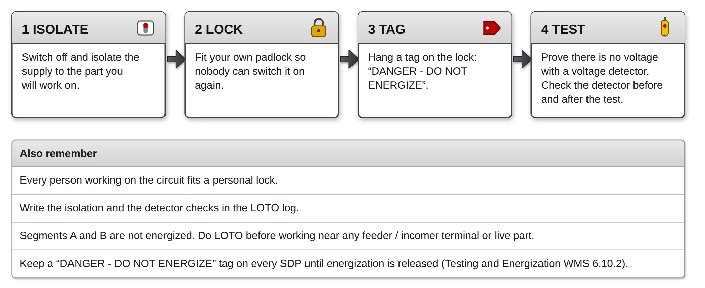
In simple words: make the circuit dead and keep it dead, and only install material that PTFI has released.
Tray, UNP Supports and Chamfered Corners
A perforated galvanized tray, 150 × 50 mm, sits on L 50×50 brackets welded to UNP 100 channels that run from column to column on the H-beam structure. The tray height follows the roof truss. Nothing is installed above the 5,000 mm rolling door.
| Route | Path | Length (m) | UNP spans |
|---|---|---|---|
| Grid 1 | A-1 to F-1, joins the Office tray at B-1 | 17.00 | 3 |
| Grid A | A-1 to A-3, joins the Office tray at A-2 | 7.60 | 2 |
| Grid F | F-1 to F-3, through column F-2 | 7.60 | 2 |
| Grid 3 west | A-3 to C-3, stops at the rolling door | 6.00 | 1 |
| Grid 3 east | D-3 to F-3, stops at the rolling door | 6.00 | 1 |
| Office grid B | B-1 to B-2 | 3.80 | 1 |
| Office grid 2 | B-2 to A-2 | 4.00 | 1 |
| Total | About 18 sections × 3 m, 10 × 45° elbows, 2 tees | ≈52.00 | 11 |
Key Rules for the Field Team
- Corners No direct 90° turn: 45° elbow, short straight piece, 45° elbow at A-1, F-1, B-2, A-3, F-3
- Junctions Tees at B-1 and A-2 where the Office tray joins
- Rolling door No tray, bracket, conduit or cable across the opening
- Joints Every joint next to a support; smooth bolt head inside the tray
- Separation Power and data cables do not share a tray unless PTFI approves
Welding and Bonding
- Welding UNP 100 and L 50×50 are welded to the structure with a hot-work permit, qualified welder and approved WPS
- Inspection Welds are inspected by the PTFI welding inspector, not in the electrical ITP
- Bonding PE jumpers across joints where continuity is not assured; tray, UNP and brackets bonded to the grounding network
- Release Hold point ITP 2.1.4 before laying cable
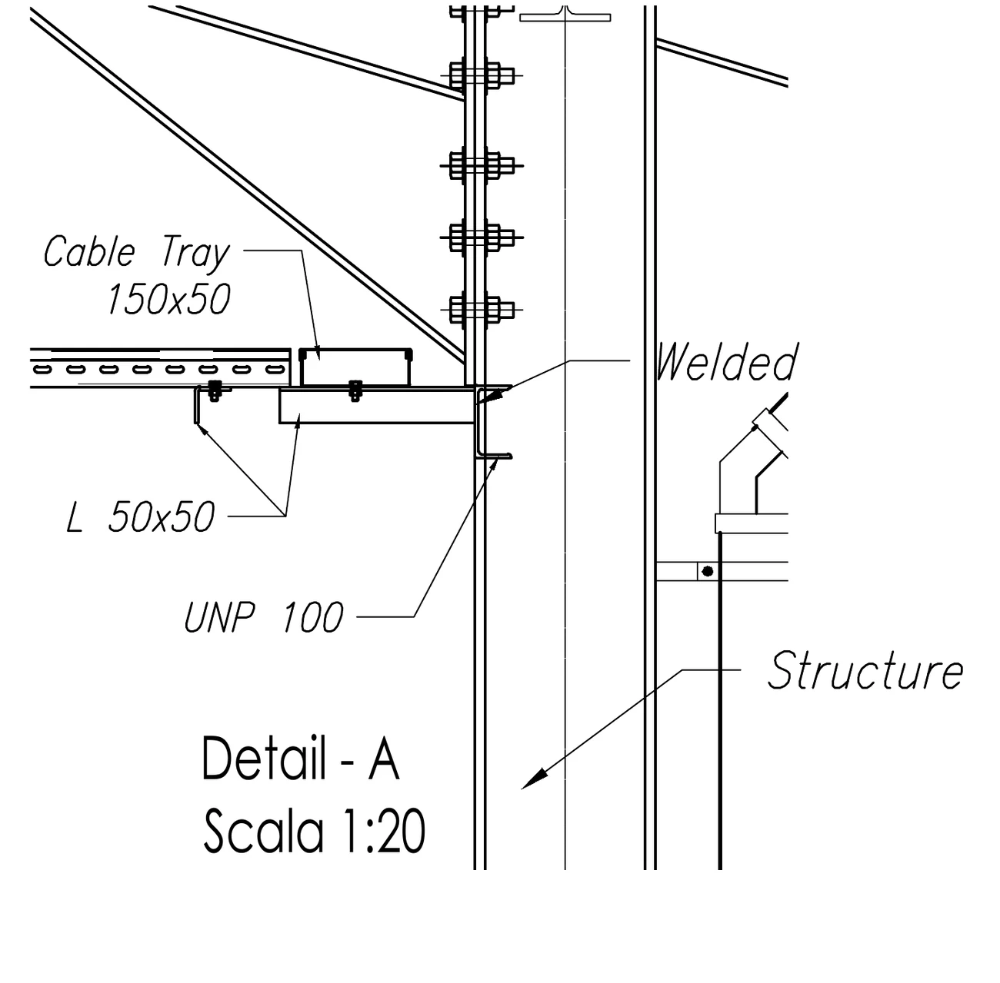
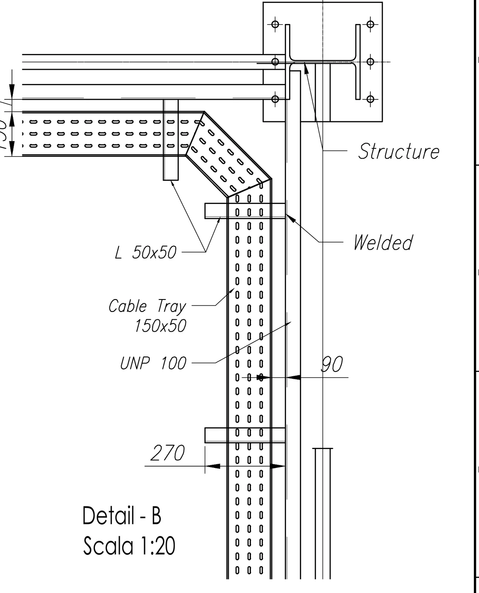
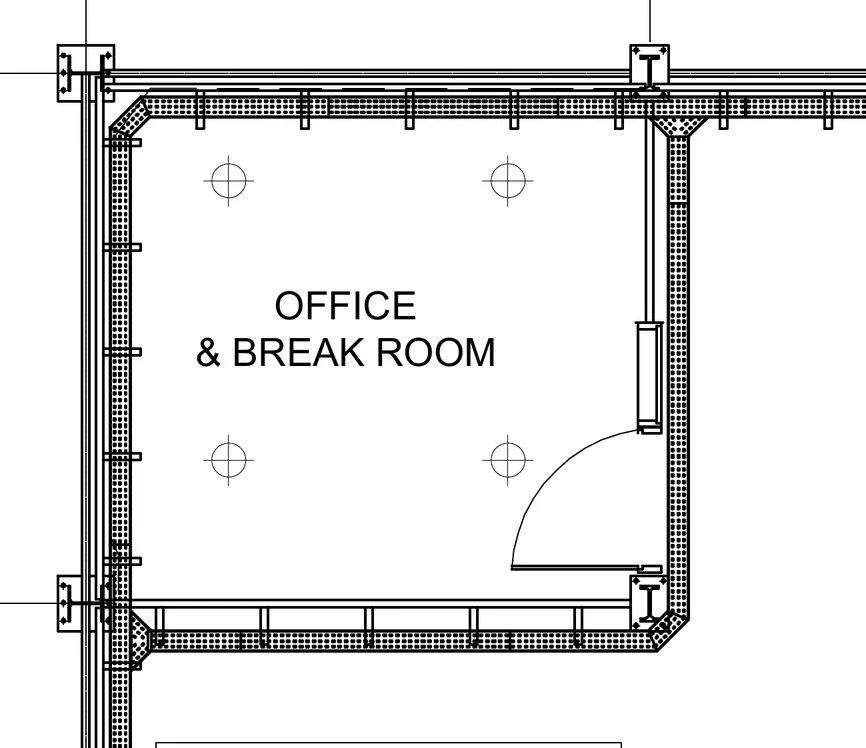
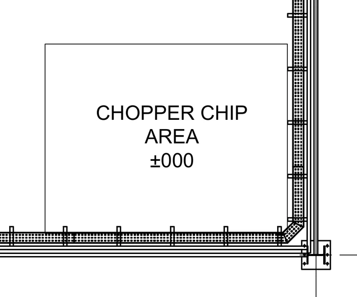
In simple words: a tray that is level, fully supported and bonded, with gentle corners, makes the cable easier to pull and safer to live with.
Panel Mounting and Internal Assembly
Each panel is mounted on two UNP posts that stand against the sandwich-panel wall. BOLT 2 fixes the UNP to the wall U, BOLT 1 fixes the panel to the UNP. SDP 2, 3 and 4 sit side by side with a 250 mm gap. Inside, only the parts shown on the released SLD are fitted.
Panel Internals (per SDP)
- Rail DIN rail TS 35 × 7.5 mm, 2 pcs
- Breakers Main MCCB plus outgoing RCBOs, approved busbar or comb
- Bars Neutral bar on insulated supports, PE bar bonded to the enclosure
- Metering R/S/T amp meters with ring CT (max. 100 A), lamps and 1 A fuses where on the SLD
- Ducts Slotted wiring duct 50 × 50 mm
Checks Before Moving On
- DIN rail Straight, level, rigid; supervisor checks it before components are fitted
- Breakers Rating, poles, residual current and kA match the SLD; no substitution
- Neutral and PE Neutral bar must not touch the metal mounting plate
- Cleanliness No metal chips or tools left inside; gland plate cut before fitting
- Label Printed panel nameplate and a label on every breaker
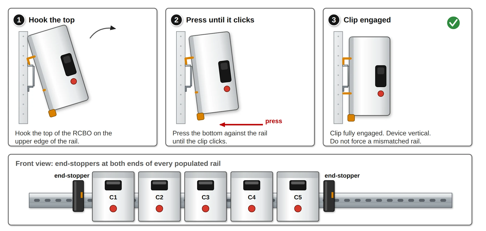
In simple words: the panel is a neat, labelled box where every breaker, bar and wire is where the drawing says, and nothing metal is left loose inside.
Cable Schedule, SLDs and Pulling Method
Cables are pulled only after the tray and panels are released. The incomer and larger cables go first, then the smaller circuits, route by route. Cable size, core count and protection come from the SLD and are never changed on site without written PTFI approval.
| Panel | Circuit / load | Cable | Protection |
|---|---|---|---|
| SDP 1 | Incomer from MDP | N2XY 25 mm², 2C+E | MCCB 4P, 16 A, 6 kA |
| SDP 1 | Lighting: 2 switches, 4 LED lamps | N2XY 2.5 mm², 2C+E | RCBO 4 A, 30 mA |
| SDP 1 | Receptacles #1 to #3 (220 V) | N2XY 6 mm², 2C+E | RCBO 10 A, 30 mA |
| SDP 1 | Receptacle #4 (air conditioner) | 6 mm² to JB, 10 mm² to socket | RCBO 10 A, 30 mA |
| SDP 2 | Incomer from MDP | N2XY 35 mm², 3C+E+N | MCCB 4P, 32 A |
| SDP 2 | Industrial receptacles #1 to #3 (220 V) | N2XY 16 mm², 2C+E | RCBO 20 A, 30 mA each |
| SDP 2 | 3 lighting groups (switch + 2 highbay lamps) | 4 mm², 2.5 mm² lamp drops | RCBO 4 A each |
| SDP 3 | Incomer from MDP | N2XY 25 mm², 3C+E+N | MCCB 4P, 50 A |
| SDP 3 | Industrial receptacles #1 to #4 (380 V, 32 A socket) | N2XY 6 mm², 3C+E+N | RCBO 4P 20 A, 300 mA (2 circuits) |
| SDP 3 | Exhaust fans #5, #6 and rolling door | N2XY 2.5 mm², 3C+E+N | RCBO 4P 4 A, 300 mA |
| SDP 3 | Vacuum cleaner (380 V, 10 A) | N2XY 4 mm², core count on hold | RCBO 4P 10 A, 300 mA |
| SDP 4 | Incomer from MDP | N2XY 50 mm², 3C+E+N | MCCB 4P, 125 A, 25 kA |
| SDP 4 | Milling machines #1, #2 (#3 spare, kept disconnected) | N2XY 10 mm², 3C+E+N | RCBO 4P 32 A, 300 mA |
| SDP 4 | Jib crane hoist | N2XY 2.5 mm², 3C+E+N | RCBO 4P 6 A, 300 mA |
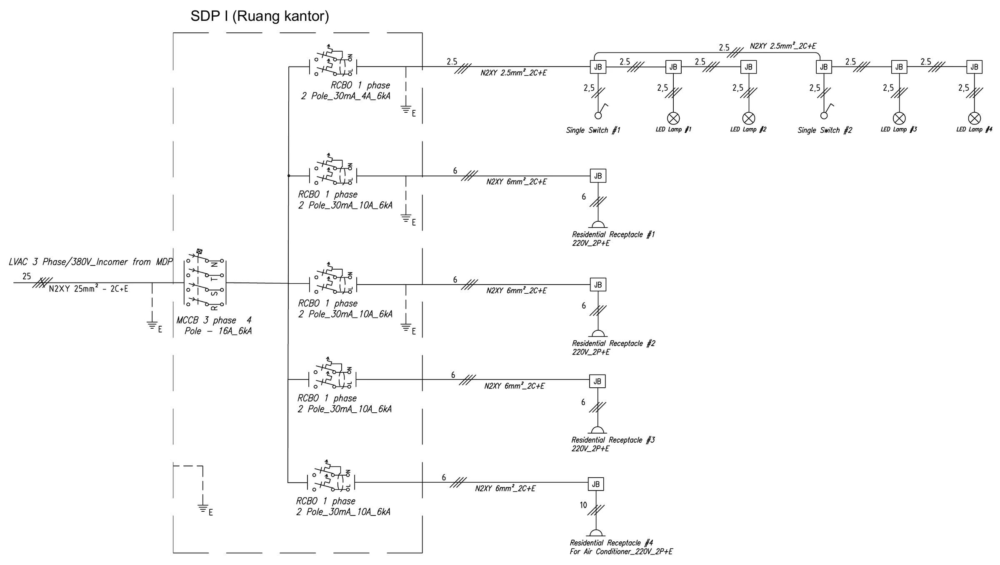
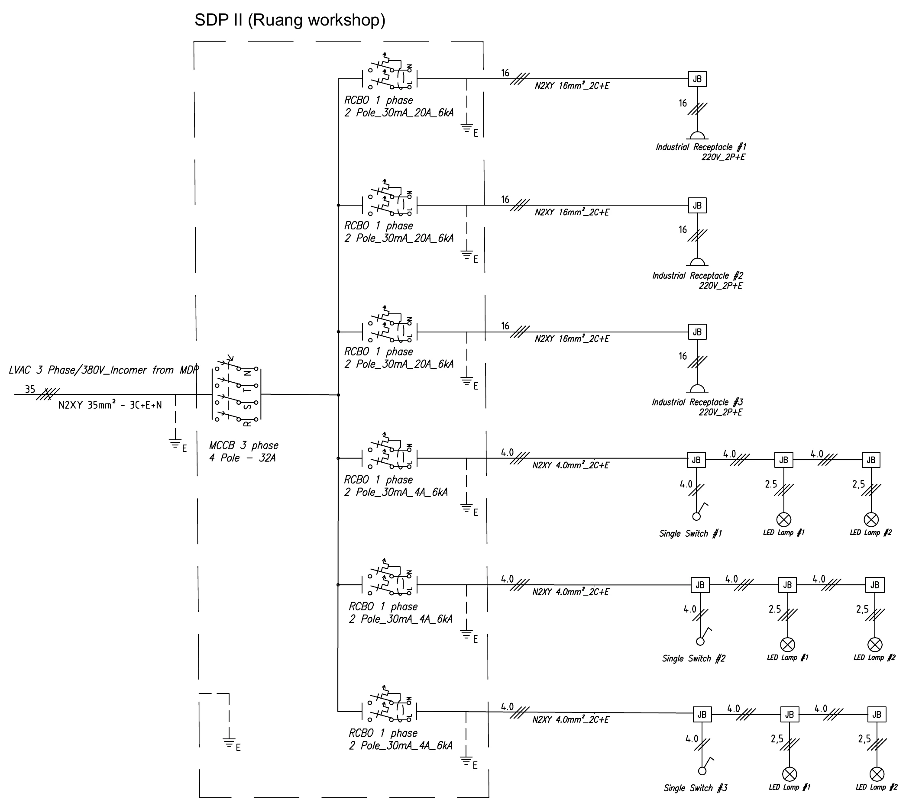
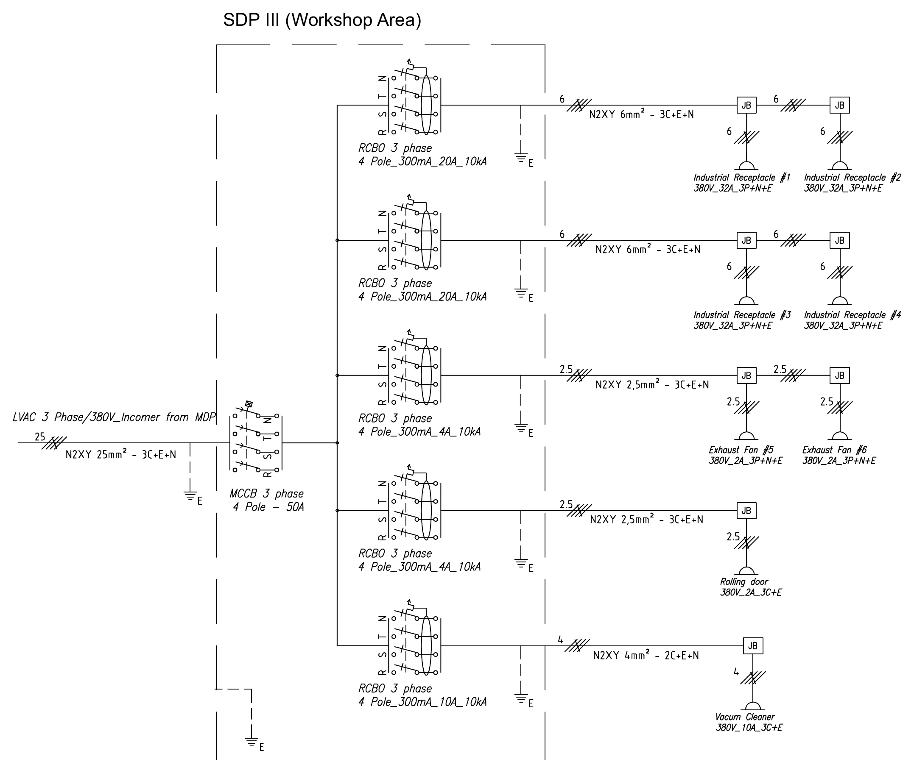
Pulling Method
- Order Incomer and larger cables first, then smaller circuits
- Equipment Drum jack, rollers at bends and tray entry, pulling grips
- Bend radius Normally 12 × cable diameter for multicore N2XY
- Stop rule Stop at once if the cable jams, tension nears the limit or contact is lost
Laying and Identification
- Laying Neat groups per circuit, one layer where possible, tray fill checked first
- Fixing Ties or cleats at the maker’s spacing, extra fixing at drops and bends
- Tags Printed tag at both ends, at each junction and both sides of wall openings
- Records Cable log: circuit, drum, length, route, date, installer
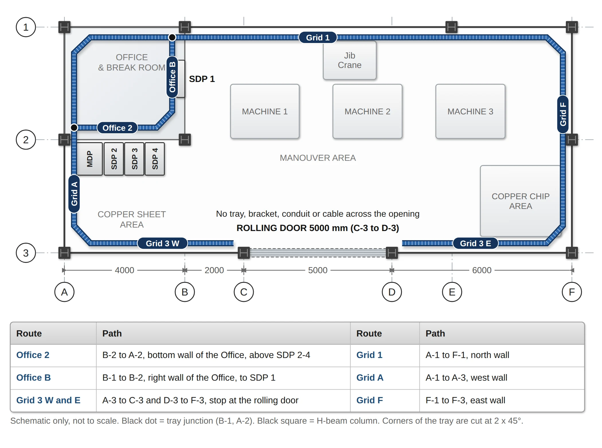
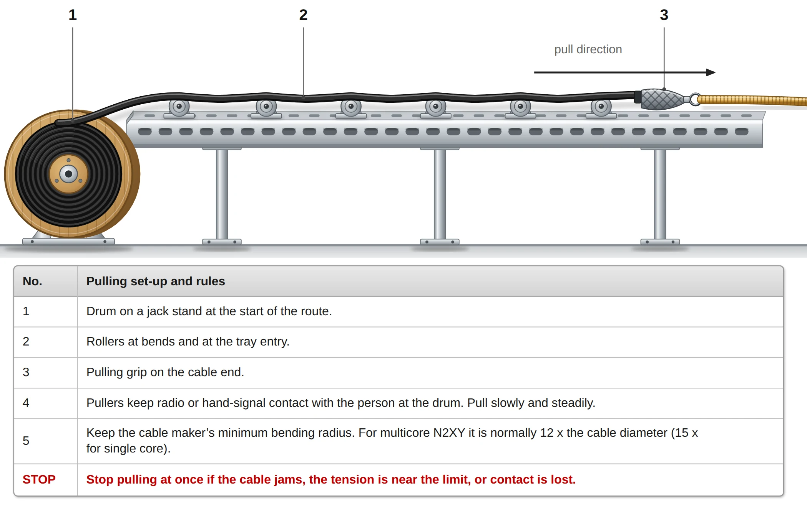
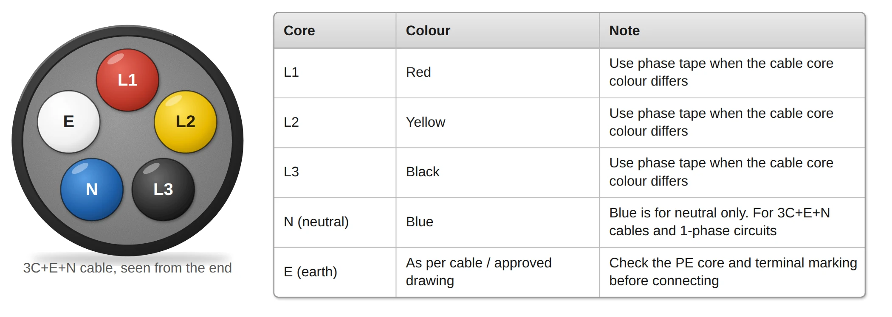
In simple words: pull slowly, never force the cable, and make sure every cable can be traced back to its circuit by its tag.
Internal Wiring, Load Termination and Devices
Inside the panel, wire is cut to length, ferruled or lugged with the right crimp tool, connected to the marked terminals and tightened to the manufacturer’s torque with a calibrated tool. At the load, the cable cores are matched to the receptacle pins and the equipment nameplate before anything is connected.
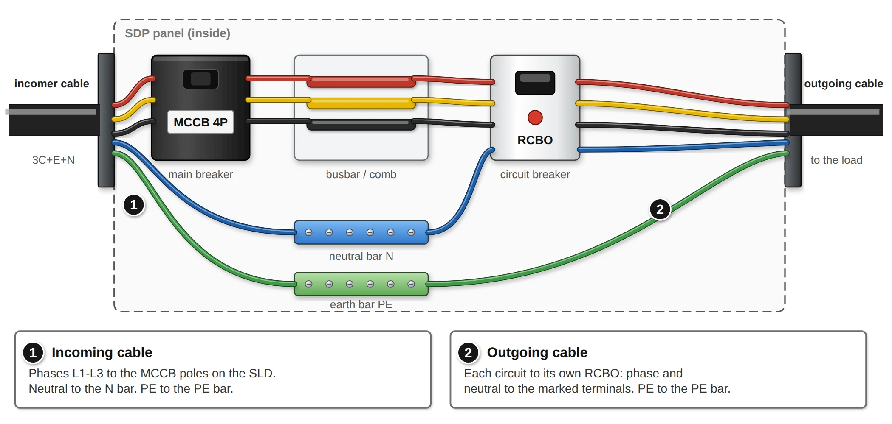
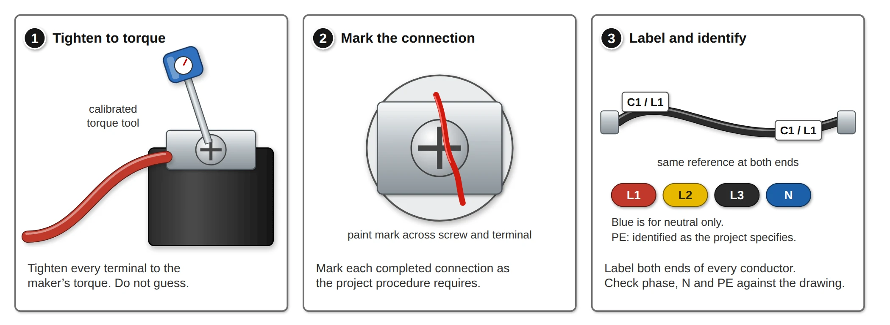
Termination Rules
- 3P+N+E Connect L1, L2, L3, N and PE to the marked terminals
- 3P+E No neutral pin: connect L1, L2, L3 and PE only
- 2P+E Connect L, N and PE
- Labels The 32 A receptacles on SDP 3 are fed from 20 A RCBOs, so each gets a printed “Max. 20 A” label
- Motors An RCBO alone does not protect a motor: overload protection must be on the SLD or in the equipment
Devices
- Receptacles 16 receptacles across SDP 1 to SDP 4, positions per Cable Layout
- Junction boxes 100 × 100 mm: SDP 1 – 10, SDP 2 – 12, SDP 3 – 8, SDP 4 – 4
- Lighting 4 LED lamps (24 W) in the Office, 6 UFO highbay lamps (100 W) in the Workshop
- Switches 1 double switch for SDP 1, 3 for SDP 2, checked against the lamp each one controls
In simple words: count the terminals on the receptacle and connect only those wires, check the pins against the machine plug and fit the printed label.
HSE Controls for the Whole Job
Safety controls apply to every step. Everyone wears the PPE PTFI requires, and only certified, inducted people work on site. The WMS keeps the panels de-energized with “DANGER – DO NOT ENERGIZE” tags until testing and energization are released under their own procedure.
| Hazard | Control |
|---|---|
| Electric shock / arc flash | LOTOTO and permits; check the voltage detector before and after testing; insulated tools |
| Work at height | Tagged scaffold, podium ladder or MEWP; harness; rescue plan on site; barricade below |
| Falling tools and material | Barricade and signs below; nothing left on the tray, scaffold or ladder |
| Lifting tray and moving panels | Lifting gear with checked capacity, lifting plan with the panel weight, never lift by the door or gland plate |
| Welding on steel | Hot-work permit, qualified welder, approved WPS, fire watch and ventilation |
| Cable pulling | Rollers, controlled pulling, exclusion zone, stop if the cable jams |
| Sharp edges | Gloves and eye protection; smooth cut edges and restore the coating |
| Fire | Fire-stop sealant at rated wall and floor openings |
| Housekeeping | Daily removal of offcuts and dust; keep copper chips, dust and water out of panels and trays |
Confidentiality: the drawings and the WMS are PTFI project documents. Contact details and internal references have been left out of this page. The full document is available on request through the contact page.
This project involves client-confidential tender and site documentation. Full method statements, BOQ, schedules and K3/HSE plans are available on request.
Request DocumentationProject Gallery
Raw material, machine, layout and trial-result references from the PTFI Copper Chip Fabricator Machine kickoff proposal.
Results & Outcomes
Achievements
Tender documentation package accepted by PT Freeport Indonesia, securing contract award for the Copper Chip Milling System project.
Client Presentation
Led the formal technical presentation covering project scope, commissioning methodology, K3 compliance framework, and equipment selection rationale.
Schedule & Procurement
Multi-vendor procurement coordinated against a Gantt-based master schedule to keep delivery aligned with the critical path.
Status
Project engineering and commissioning support ongoing as of this writing.
Trial-Verified Solution
Machining trial confirmed 7 × 1 × 1 mm chip output — well inside PTFI's 15 × 5 × 1 mm limit — before the proposal was submitted, de-risking the technical case presented to the client.
Full-Scope Engineering Package
Delivered an integrated package spanning raw material analysis, machine & equipment specification, process flow, plant layout, K3/HSE (HIRADC, PPE matrix, ERP), preparation schedule and commercial structure for a 24-month, 90-ton/year contract.
Workshop Electrical WMS
Authored the 17-step Work Method Statement for the Copper Chip Workshop electrical installation (tray, four SDP panels, wiring, devices), with hold points, RFIs for drawing conflicts and a LOTOTO-based safety plan. Issued for PTFI approval.